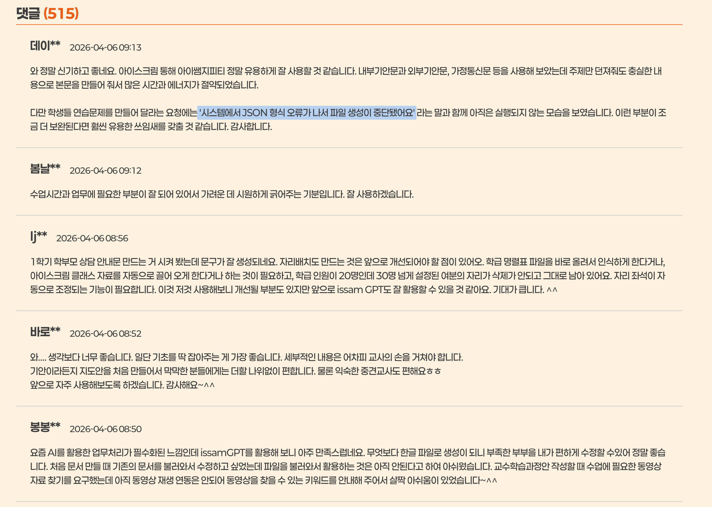
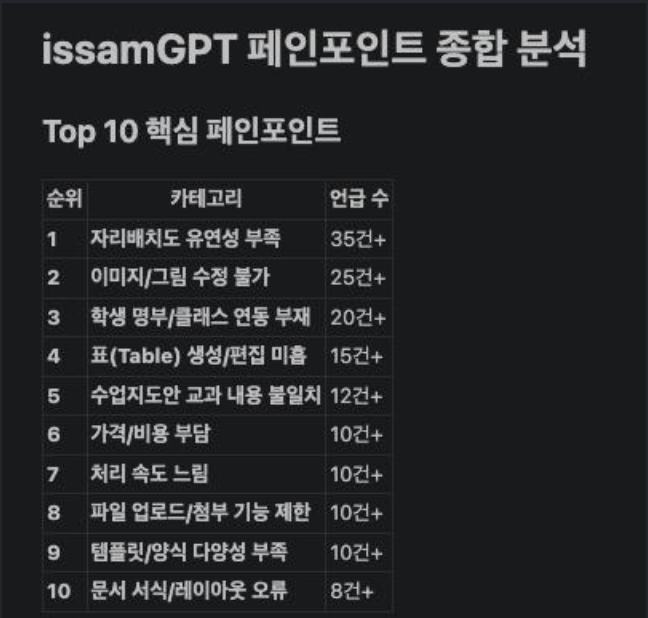
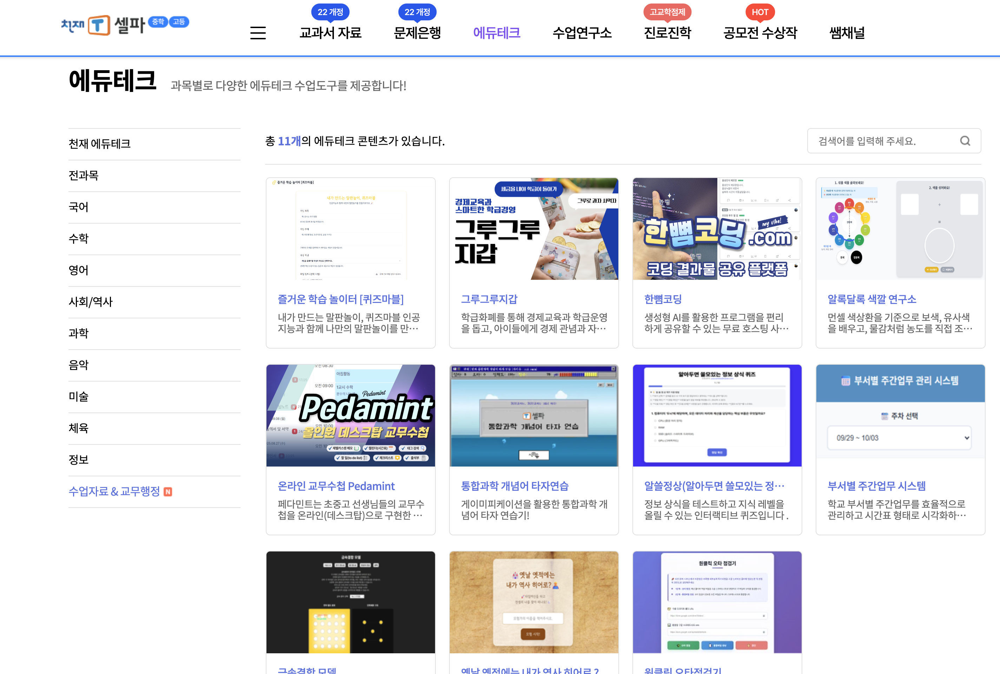
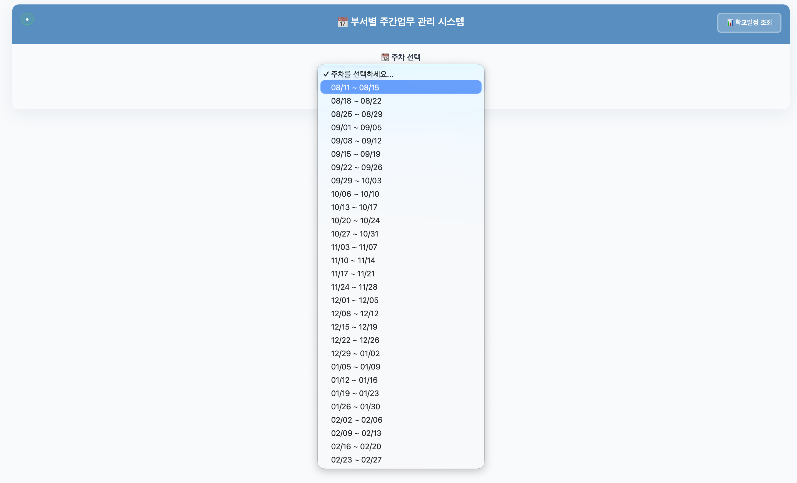
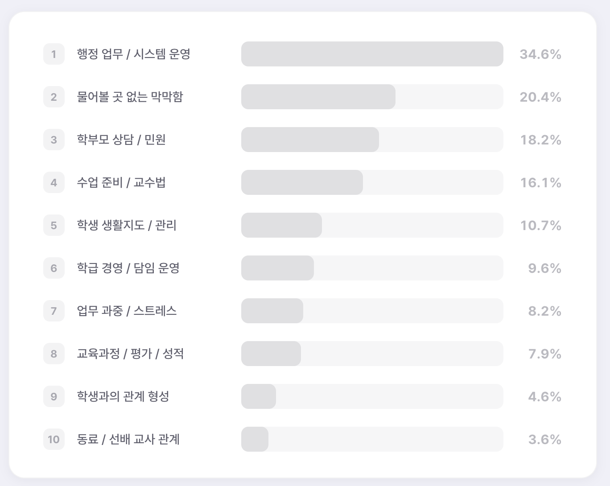
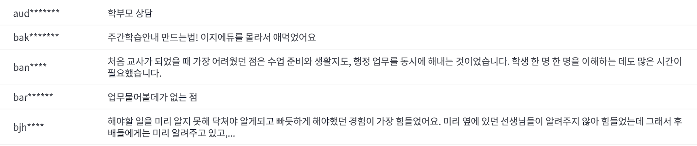
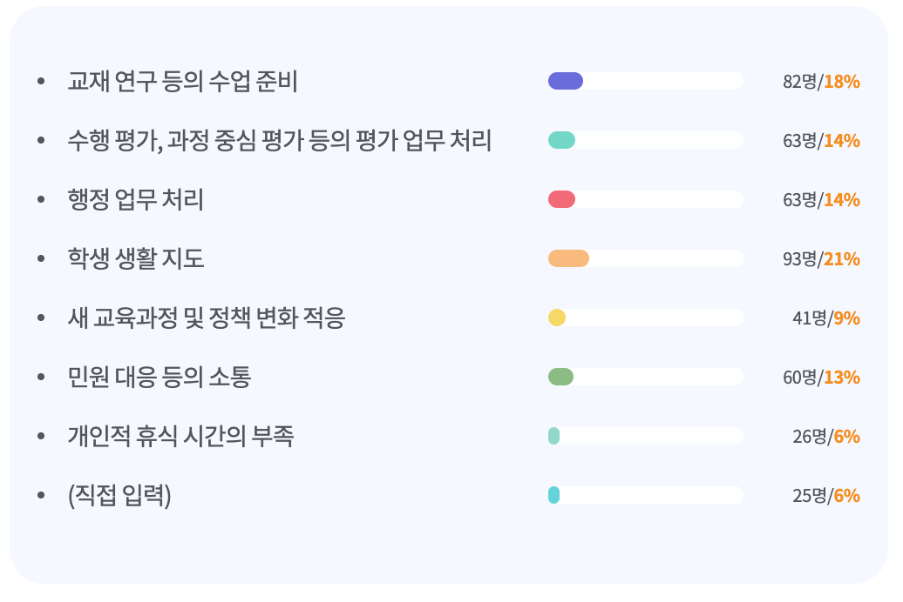
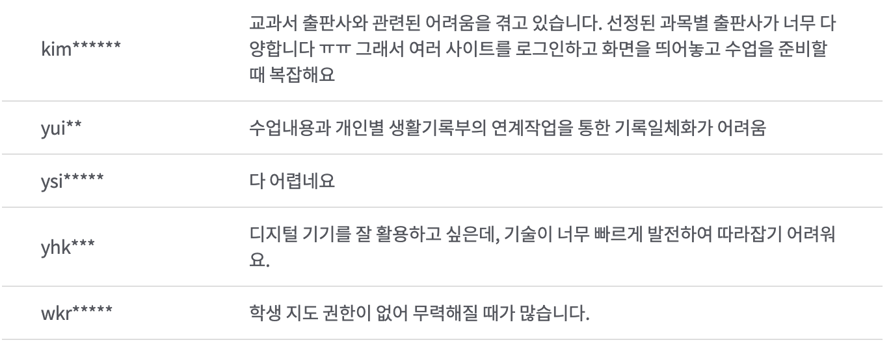

모듈형 에듀테크 서비스를 위한 플랫폼
에듀테크 트렌드 변화:
Digitalizing (코로나 전) → LMS (코로나 후) →
AI Support (현재)
자료 생성은 우수하나, 산출물에 대한 부정적 현장 의견
서비스는 다양하나, 산출물의 엉성함으로 실제 도움 한계
디지털 친화적이지 않은 교사도 쉽게 사용.
오프라인 고충을 온라인으로 해소하는 차별성
좋은 콘텐츠 기반의 검증된 AI 산출물.
초보 선생님부터 베테랑 교사까지 안심하고 사용하는 신뢰도
표준 메타정보 중심 서비스.
우리 교재뿐만 아니라 타 교재 유저까지 확보
"누구든지 쓰고 싶고, 쓰다 보니 편해서 매일 오고 오래 머물고 싶은 서비스"
• 한 번의 회원가입으로 모든 서비스를 사용
• 학생 회원가입 및 전용 기기 없이도 OK
• 선생님의 하루 일과에 필요한 모든 기능으로 라인업
• 수업부터 행정까지 끊김 없는 워크플로우 지원
• 미니 스낵을 즐기듯 필요한 기능만 골라 쓰는 구조
• 교사 니즈에 맞춘 유연한 커스터마이징 제공
3D 게임 및 인터랙티브 활동에
로그인 없이 QR 스캔만으로 학생 참여
필요한 자료를 맞춤형으로 생성하여
즉시 다운로드하여 오프라인 배부 가능
학생의 서술형 평가지도 스캔 업로드 시
AI가 문맥을 분석하여 즉시 평가 및 채점
수업 준비 코파일럿
교무 행정 및 범용 서비스
✨ 교사의 니즈를 즉각 반영하는 "월간 서비스"로 선생님과 함께 성장하는 플랫폼
최초 학급 정보 입력만으로
해당 환경에 최적화된 배경과 도구 자동 배정
선생님의 평소 수업 활동 로그를 분석하여
가장 알맞은 도구와 콘텐츠를 스마트하게 제안
미니 스낵을 고르듯 필요한 앱을
자유롭게 배치하거나 숨기는 위젯형 대시보드
COMPETITOR 01


COMPETITOR 02


INSIGHT 01


INSIGHT 02

